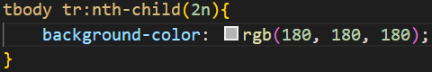

Anatomia para tabelas grandes
table
Caption(titulo da tabela)
Thead:
tr, td, th
Tbody:
tr, td, th
Tfoot:
tr, td, th
Efeito zebrado
Utilizar pseudo-class :nth-child(2n)

Cabeçalho fixo em tabelas
- Colocar um position:relative em table{ }
- Em Thead {} colocar position:sticky / top: -1px;


| Estado | População |
|---|---|
| São Paulo | 46 649 132 |
| Minas Gerais | 21 411 923 |
| Rio de Janeiro | 17 463 349 |
| Bahia | 14 985 284 |
| Paraná | 11 597 484 |
| Rio grande do sul | 11 466 630 |
| Pernambuco | 9 674 793 |
| Ceará | 9 240 580 |
| Pará | 8 777 124 |
| Santa Catarina | 7 338 473 |
| Maranhão | 7 206 589 |
| Goias | 7 153 262 |
| Amazonas | 4 269 995 |
| Espirito Santos | 4 108 508 |
| Paraiba | 4 059 905 |
| Rio Grande do Norte | 4 059 905 |
| Mato Grosso | 3 567 234 |
| Alagoas | 3 560 903 |
| Piaui | 3 365 351 |
| Distrito Federal | 3 094 325 |
| Mato Grosso do Sul | 2 839 188 |
| Sergipe | 2 338 474 |
| Rondônia | 1 815 278 |
| Tocantins | 1 607 363 |
| Acre | 906 876 |
| Amapá | 877 613 |
| Roraima | 652 713 | Total de Habitates | 213.317.639 |